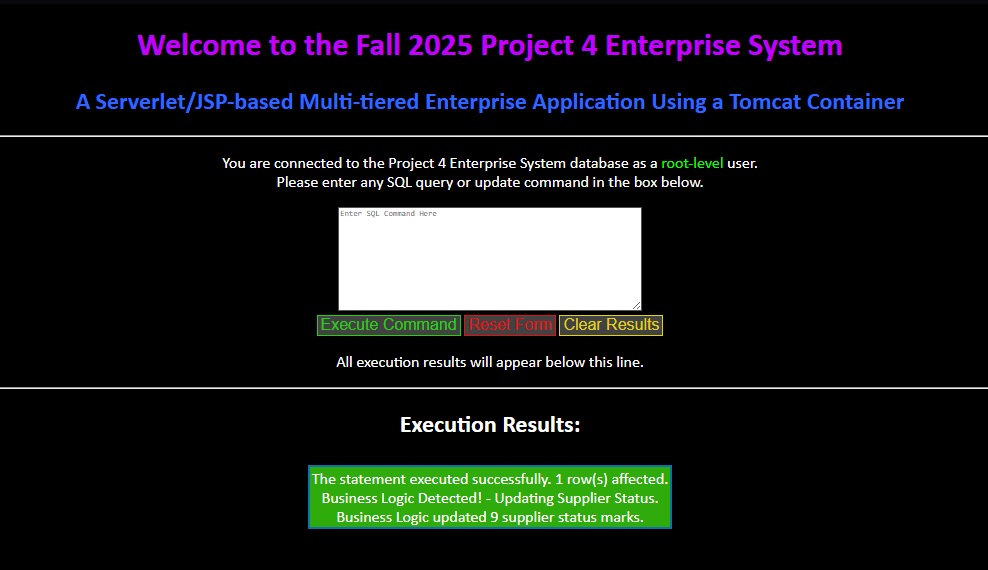

This project had me utilizing MySQL, JDBC, servlets/JSP, and a Tomcat container to create a functional three-tier web application. The point of this project is similar to my two-tier server application, but advancing it further by hosting it on a browser. The website had a credential check, MySQL back-end, and different functionality based on the type of user you were logged in as.

This project compounded on a lot of the previous projects I've listed under the "Java Projects" category of this portfolio. I applied my understanding of GUI's from the event-driven GUI and two-tier server applications. From the two-tier server application, I also applied my understanding of JDBC and MySQL for databases, and it helped me understand the confusing topic that is Tomcat, JSP's and servlets just a little bit easier. There are a lot of concepts that went into this project.
This download contains a zip of my submission, including the source code and
a Microsoft Word document containing more screenshots of the program.
This was originally submitted as schoolwork, so the name of the source code is Project 4.
NOTE: I have included some of the additional SQL files written by my professor, Professor Mark Llewellyn. This is not my work but will be required
for the GUI to function in conjuction with the MySQL database. It also includes lists of commands each user can type to verify results.